HORT 281 :: Lecture 22 :: ORIGIN, AREA, PRODUCTION, VARIETIES, PACKAGE OF PRACTICES FOR POTATO

Origin, area, production, varieties, package of practices for POTATO
Family: Solanaceae
Botanical Name: Solanum tuberosum
Chromosome Number: 2n= 48
Origin and History
The probable centre of origin of potato is in South America in the central Andean region. Evidence indicates that potatoes were cultivated for centuries by South American Indians and the tubers were used as a common article of food. The Spaniards during invasion found this economic plant worthy of introduction into Europe. The Spanish people brought potato from Peru to Spain in 1565. Sir Francis drake probably brought them to England about 1586. Following its introduction in to European agriculture, potato became an important food crop of Italy, France, and Ireland. During the famine years, the potato crop became valuable food crop in Ireland. Potato was introduced to India from Europe in the beginning of the seventeenth century, probably by the Portuguese, who were the first to open trade routes to the east. The first mention of potato in India occurs in ‘Terry’s account of a banquet at Ajmer given by Asaph Khan to Sir Thomas Rao in 1615. Potato was grown in many gardens of Surat and Karnataka in about 1675. Cultivation of potato in northern hills started later than plains but became as cash crop much earlier. Cultivation of potato was beginning first in the Nilgiri hills in the 1822. The spread of potato is given in Figure1.
Nutritive value and uses
It is one of the important crop of the world. In India, it is used only as a vegetable. Sometimes it is also mixed with other vegetables. It is also used for making of chips, halwa, gulab jamun, rasgulla, murabha, kheer, guzia and barfi etc. According to Aykroyd (1941), it contains 74.7 per cent water, 22.9 per cent sugar, .6 per cent protein, 0.1 per cent fat, 0.6 per cent mineral matters, 0.01 per cent calcium, 0.03 per cent phosphorus and 0.0007 per cent iron, while according to Macgillivray (1953), it contains 77.8 per cent water, and food value per 100g of edible portion is energy 85 calories, protein 2 g, calcium 13 mg , vitamin A 40 IU, ascorbic acid 12 mg, thiamine 0.11 mg, riboflavin 0.06 mg and niacin 1.18 mg and according to Chatfield (1949) raw potato also contain in 100 g, edible portion: Na 3 mg, K 410 mg, Ca 14 mg, Mg 27 mg, Fe 0.8 mg, Cu 0.16 mg, P 56mg, S 29 mg and Cl 35 mg. The potato tuber may contain an alkaloid (Solanine), if it is exposed to light. It is poisonous compound but 70 per cent of it is removed when potatoes are peeled. This alkaloid may cause sickness or death both to live stock and the human beings. Nadkarni (1927) has reported the following medicinal uses of potatoes:
It is anti-scorbutic. Persons with neurotic and liver dyspepsia digest it well. It is also employed as an, diuretic and galactagogue, nervous sedative and stimulant in gout. The leaves in the form of extract are employed as an antispamodic in chronic cough producing effects as those of optimum etc. potato grind into a paste is applied as plaster to burns caused by fire with good results. The juice of the potato is a dark colored liquid due to the presence of citric and succinic acids. Potatoes may be mealy or non-mealy. Mealy potatoes are those in which the cells, on cooking, separate from one another so that they may be piled up in loose flour with air between them instead of remaining in a solid mass with water in the small intercellular spaces. But this is absent in immature potatoes due to low quantity of starch. Mealiness and high starch are associated with high specific gravity. According to Covdon and Boussard (1897) disruption of potatoes in cooking is partly due to turgidity of tissues, the more turgid they are more easily do they fracture and permit the ready penetration of boiling water.
Area and Production
In India out of total 5335447 ha of land under vegetables, potato occupies nearly 20.79 per cent area. The area (1109000 ha) under potato, during the year 1995-96 followed percentage change of –2.30, -10.56, -5.91 and 3.70 over 1991-92, 1992-93, 1993-94 and 1994-95, respectively. Production of potato was 18843300 MT during the year 1995-96, having 26.32 per cent share in the total vegetable production. Production increased by 3.56, 1.97, 8.34 and 8.29 per cent over 1991-92, 1992-93, 1993-94 and 1994-95 respectively. The productivity of potato was 16.99 MT/ha, whereas the highest 24.4 MT/ha was of West Bengal in the country (NHB, 1998) potato is grown in almost all the states of India. It is mainly grown in the states like Uttar Pradesh, West Bengal, Punjab, Karnataka, Assam and Madhya Pradesh. The major potato producing belts in India are as given below (NHB, 1998).
- Himachal Pradesh: Shimla, Lahul Spiti and Mandi.
- Punjab: Jalandhar, Hoshiyarpur, Ludhiana and Patiala.
- Haryana: Ambala, Kurukshetra, Hisar and Karnal.
- Uttar Pradesh: Farrukhabad, Etawah, Manpuri, barabanki, Allahabad, Badaun, Moradabad, Agra, Aligarh, Mathura and Faizabad.
- Madhya Pradesh: Sidhi, Satana, Rewa, Sagar, Rajgarh and Tikamgarh.
- Chhattigarh: Sarguja and Raipur.
- Rajasthan
- Gujarat: Khera, Dissa, Baransh katha, Jamnagar, Baroda, Mehsana.
- Orisa: Cuttack, Dhenkamal, Puri and Sambalpur.
- West Bengal
- Maharashtra: Pune, Satana, Kolhapur and Nasik.
- Karnataka: Belgaum and Dharwad , Hassan, Kolar.
- Uttaranchal: Almora, Pilibhit and Haldwani.
- Andhra Pradesh: Medak and Chittoor.
- Tamil Nadu: Dhinigulanna and the Nilgiris
- Assam
Apart from India, the other major producers of potato in world are China, Russian Federal, Poland, USA, Ukraine, Germany,Netherlands and UK (NHB, 1998)
Classification, Botany and Floral Biology
Classification
The potato was first domesticated in the high plateau region of the Peruvian and Bolivian Andes and has been grown for several millennia. A total of seven cultivated species were domesticated and they remain the most important crop in the high Andean, regions, where the greatest genetic diversity of cultivated potato is concentrated (Engel, 1970). The cultivated potatoes species are as given below:
Table1. Classification and origin of the cultivated potatoes
Species |
Distribution |
Origin |
Solanum tuberosum sub sp. tuberosum (2n = 48) (2n =n48) |
Cosmopolitan |
By artificial selection in Europe, North America and Chile from introduced clones of group 2. |
S. tuberosum sub sp. andigena (2n = 48) |
Venezuela to northern Argentina; also sporadically in central America and Mexico |
From group 4 and 5 by spontaneous doubling of the chromosome number. |
S.chaucha (2n = 36) S. phuerja (2n = 24) |
Central Peru to northern Bolivia Venezuela to northern Bolivia |
By hybridization between group 2 and 4 and 5. by selection for short tuber dormancy from group 5. |
S.stentomum (2n=24) |
Southern Peru to northern Bolivia |
By natural hybridization between wild species followed by artificial selection. |
S.juzepcsukii (2n=36) |
Central peru to southern Bolivia |
From crosses of S.acaule with groups of 4 and 5 |
S.curtilobum |
Central peru to southern Bolivia |
Crosses of S. juzepczukii with group 2. |
The commercial potato generally belong to two species
Solanum andigenum: it is not very common. Plants have thin and long stem, small and narrow leaflets. Flowers are produced more profusely. It has long stolons and mostly coloured deep- eyed tubers.
Solanum tuberosum: It is more common, plants have shorter and thicker stem larger and wider leaflets.
In addition to two species, there are also some important species, which shows resistant to biotic and abiotic. Theses species are given in Table 2.
Table 2. Potato species resistant to biotic and abiotic
Species |
Utility |
Solanum demissum lind (2n = 72) |
Resistance to late blight, virus A, virus Y |
S. stoloniferum (2n = 48) |
Resistance to virus x, frost, Colorado beetle. |
S.vernei Bitt et,. Wittm (2n = 24) |
Resistant to two species of Heterodera nematode. |
S. multidissectum Waek (2n=24) |
Resistant to two species of Heterodera nematode. |
S.antipovczii Bulk |
Resistance to late blight |
S.curtilobum jug. Et. Buk |
Resistant to frost |
S. phureja jug. Et. Buk |
Non dormant type used inbreeding |
S. chacoense bitter |
Non dormant type used in breeding |
S . anomalocalyx, S. jamessi Torr; S. Saltense |
Resistance to early blight. |
Potato can also be divided on the basis of origin and response to day length as given in Table 3.
Table3. Classification on the Basis of origin and Response of Day Length:
Distant characters |
S.tuberosum |
S.andigenum |
Origin |
Andean region |
Chile region |
Day length response |
Long day plants |
Short day plants |
Polyploidy |
Many types of polyploids |
Tetraploids |
Distinct varieties |
‘Up-to-date’ Magnum’ Bonum’ etc |
All the desi varieties like ‘Darjeeling’, ‘Red Round’, ‘Phulwa’ and ‘Gola’ |
Potato can be classified into early and late varieties. They are given below in Table 4.
Table 4. Classification of potato on the Basis of Crop Duration
Character |
Early potato |
Late potato |
Stolon length |
Short |
Long |
Stem |
Hollow |
Solid |
Petioles |
Broader |
Narrow |
Stolon number |
Less number |
More number |
Tuber colour |
White |
Coloured |
Photoperiodism |
Long day for tuber development |
Short day for tuber development |
Varieties |
‘Satha’, ‘Gola’, Great Scot’, Kufri Chandramukhi’ |
‘Phulwa’, ‘Kufri Kissan’, ‘Kufri Safed’ |
Varieties/Hybrids
KUFRI ALANKAR
It is a derivatives of the cross (Kennebee x O.N .2090) x (Majestic x Ekishiraju), released in 1968 by Central Variety Release Committee for plains of Punjab, Haryana and Western Uttar Pradesh and specially suited for sandy soils. Plants are very tall, open and erect with thick and strong stem and RI) 2 colour uniformly distributed. Leaflets are rough and present in leaflets midrib of 2.3 top leaves but not in the stem base. Tubers are oblong, tapering towards and, flesh dull white eyes and medium deep to fleet. It shows slow rate of degeneration. Tubers develop crack if allowed to remain till full maturity. It is rapid bulking variety keeping quality not good. It matures 75 days in plains and 140 days in hills. The yield potential is 300 q/ha in plains and 100 a/ha in hills. This variety is having moderate field resistance to late blight with immunity to race 1 and '0' susceptible to common scab.
KUFRI ANAND
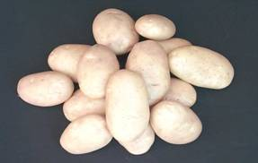A derivative of PJ376 x PH/F 1430, released from CPRI, Shimla in 1999. plants are tall erect, vigorous, stems few, thick and pigmented at the base. Foliage is grey-green, leaves intermediate and rachis green. Leaflets are ovate lanceolate, smooth, glossy surface with entire margin and occasionally terminal leaflets fused. Flowers are light purple in colour with moderate flowering. Anthers are orange yellow, well-developed and low pollen stain ability. Stigma is round and notched. Tubers are white, large oval long, flattened, smooth skin, fleet eyes, white flesh having red purple sprouts. It is a medium maturing variety (100-110 days) having a yield potential of 350-400 q/ha. This variety is adaptable to plains of Uttar Pradesh and neighboring states. This variety is resistant blight. The tubers are ideal in shape for French fries.
KUFRI ASHOKA
It is a wider adaptable variety released from CPIU, Shimla in 1996. It is a derivative of (EM/C-l 020 x Allerfi'uii lleste Gelbe). Plants are medium tall, erect, medium compact and vigorous. Stems are few, medium thick, lightly pigmented at base with poorly developed straight wings. Foliage is green. Leaves are intermediate having green rachis. Leaflets are ovate lanceolate, smooth glassy surface with entire margin, Flowers are light red purple. This variety has profuse flowering. Anthers are orange-yellow, well- developed and medium pollen stain ability. Stigma is round shaped. Tubers are white, large, oval long, smooth skin and fleet eyes with white flesh having purple sprouts. It is an early maturing (70-80 days) having yield potential of 400 q/ha, suited in Bihar, Haryana, Punjab, Uttar Pradesh and West Bengal for cultivation. It is susceptible to late blight and not suitable for processing.
KUFRI BADSHAH
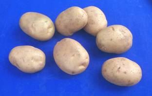It is a cross of Kufri Jyoti and Kutri Alankar and released in 1980 by Central Sub Committee on release in varieties for Indo - gangetic plains of North India, including Punjab, Haryana, Uttar Pradesh, Bihar, West Bengal, Madhya Pradesh and Plateau region. Plants are tall, haulms erect, 4-5 stems per plant with a tendency for branching, semi-solid, flexible, slightly pubescent, red purple, well developed straight wings and short (about 7-8 cm) internodes. Leaves are green, medium long, prominent venation, rachis pigmented at base, disposition almost at right angles with the stem. Leaflets are broad, medium in size, slightly hairy, entire margin, ovate, glassy veins prominent, and petiole green, usually four pairs and one terminal leaflet. Tubers are mostly large to medium, oval, shining white, smooth, regular with shallow eyes, flesh dull white, sprouts stout, thick, 1 bulbous white with light red pigmentation at the base. Stolen are thick, short and white. Flowers are scanty, white, and medium in size, fully stretching wings, pollen fertility 50-60 per cent and frequently set berries in the hills. This variety possesses medium dormancy. This variety has average keeping quality. It shows slow rate of degeneration. Tubers are tasty with good flavour. It contains 13.6 g/100 g starch and 18.6 per cent dry matter content. It matures in plains 90-100 days. It is tolerant to frost, resistant to late blight, early blight and potato virus ‘X’ but susceptible to soft.
KUFRI BAHAR
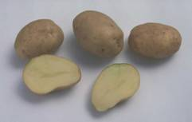It is a derivative of the cross Kufri Red x Ginek and released by :! Central Sub-Committee on Release of Varieties in 1980 for the plains of Haryana, Punjab and Western Uttar Pradesh. Plants are tall erect, medium compact and vigorous. Stem is thick, 4-5 stems per plant, succulent, semi-solid with moderately developed wings. Leaves are open, straight with 4-5 pairs of leaflets. Leaflets are grey green, medium, dull with entire margins. Foliage is of grey green colour. Tubers are large, white, round to oval, skin smooth with medium deep eyes, flesh white. Sprouts are bulbous and red. Stolens are medium long. This variety has moderate flowering, having white flowers, medium in size and sterile. Keeping quality is average with medium dormancy. It is mid maturity variety (90-100 days). Yield is 250-300 q/ha. Resistant to late blight, early blight and potato virus ‘X’, ‘Y’ and leaf roll. It is susceptible to insect pests, drought and frost.
KUFRI CHAMATKAR
A derivative of the cross Ekishiraju x Phulwa and released in 1967 by Central Variety Released Committee for the plains 01 Uttar Pradesh, Madhya Pradesh, Haryana, Punjab, where one crop of long duration is raised. Plants are medium, spreading, short stolen, compact, dark green foliage, foliage prominent, very small internodes, more stems and small leaflets. Flowers are of white colour. Tubers are round and white, eyes medium deep, flesh ye1low and red sprouts. Degeneration is slow and quick tuberization. It is late maturing variety, which matures 110-120 days in plains and 150 days in hills. The yield potential of this variety is 250 q/ha in plains and 75.00 q/ha in hills. It is resistant to early blight but susceptible to viruses, late blight, brown rot, charcoal rot, wilts and common scab.
KUFRI CHANDRAMUKHI
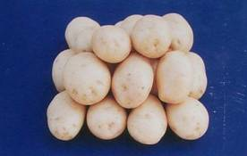It is a derivative of the cross S.4485 X Kufri Kuber and released in 1967 in Central Variety Release Committee for the plains of Punjab, Haryana, Uttar Pradesh, Madhya Pradesh, Rajasthan, Bihar, West Bengal and Maharashtra. It also grows well in Himachal Pradesh hills and Jammu regions. Plants are medium tall with open foliage habit and free from secondary growth. Foliage is grass green and glossy. The small leaflets are not fully expanded especially on top, notched tip on one side of leaflets. Tubers are oval, white, flesh dull white, eye fleet, and sprouts light red and pubescent. The variety has slow rate of degeneration and early bulking. It possesses good keeping quality. It is mid season variety, matures 80-90 days in plains and 120 days in hills. An average yield is 200 q/ha in plains and 75 q/ha in hills. It is susceptible to common scab, late blight, brown rot, nematodes, charcoal rot and wilts.
KUFRI CHIPSONA-l
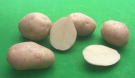It is a cross of MEX.750826 x MS/78- 79 and released from CPRI, Shimla in 1998. Plants are medium tall, semi erect, compact and vigorous. Stems are few, thick, slightly pigmented with poorly developed straight wings. Foliage is green, leaves, open and rachis green. Leaflet is ovate, smooth, dull surface with entire margin. Flowers are white and profuse flowering. Anthers are orange-yellow, well developed, and stigma round pinhead. Tubers are white medium to large oval, smooth skin, fleet eyes, and dull white flesh having green sprouts. It is medium maturing variety (90-110 days) having 400q/ha. It is suitable for cultivation in Bihar and Uttar Pradesh. It is resistant to late blight. The variety is highly suitable for making chips and French fries.
KUFRI CHIPSONA-2
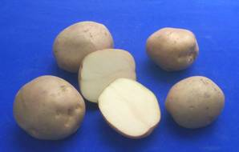It is a derivative of F-6 x QB/B-92-4 and released from CPRI, Shimla in 1998. Plants are medium tall, erect open and vigorous. Stem is few, medium thick slightly pigmented with straight wings. Foliage is dark green, leaves open, rachis green, leaflet ovate lanceolate, wrinkled dull surface with slightly wavy margin. Flowers are white and moderate in flowering. Anthers are yellow, well-developed and moderate pollen stability. Stigma is round notched. Tubers are white, medium, round oval, smooth skin, fleet eyes, and yellow flesh having reddish brown sprouts. It is medium maturing variety yielded 350 q/ha. This variety is resistant to late blight and tolerant to frost. Due to high dry matter content, low reducing sugars and low phenols, the variety is highly suitable for making chips and French Fries.
KUFRI DEWA
It is a derivative of the cross Craig’s Defiance x Phulwa and released by Central Sub-Committee on Release of Varieties in-1973 for Tarai area of Uttranchal and Shimla agro climatic conditions. It is also suitable for Bihar and Orissa. Plants are very tall open, erect and very small internodes. Leaves are semi-compact, dark green and upright. Petioles are very long having 3-6 cm towards base and devoid of leaves. Tubers are erratic round with purple splashes, eye deep and pigmented and sprout light red with white flesh. Tubers develop brown spots after harvest. It is highly susceptible to late blight, possesses good resistance to frost and drought. It matures in 120 days in plains and 165 days in hills. An average yield is 250 q/ha.
KUFRI GIRIRAJ
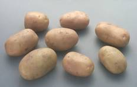It is north and south India adaptable variety. It is a cross of SLB/1-132 x EX/A 680-16 and released from CPRI, Shimla in 1998. Plants are medium tall, semi-erect, medium compact and vigorous. Stems are many, medium thick, coloured at base with moderately developed straight wings. Foliage is green, leaves open and rachis green. Leaflets are ovate, smooth dull surface with entire margin. Flowers are light purple and shy flowering. Anthers are yellow, well-developed and low pollen stability. Stigma is round. Tubers are white, medium to large, oval smooth skin, fleet eyes, and white flesh and sprout light purple. The yield potential of this variety is 250 q/ha. This variety is resistant to late blight (both foliage and tubers). It is not suitable for processing.
KUFRI HIMALINI
It is a derivative of cross SLB/H-140 x SLB/Z-389 (b) Recommended by 9th workshop of the All India Coordinated Potato Improvement Project for Hilly regions (hills of Northern India and Nilgiris in South) in the country. Plants are tall, vigorous, erect, semi-close, spreading tendency at the time of maturity. It possesses 4- 5 stems, stem solid, slightly hairy, colour red purple, spreading uniformly throughout the stem, wings moderately developed and straight. Leaves are semi-close, medium to long, placement medium and rachis of green colour. Leaflets are grey green, flat, margin entire, petiole and mid rib green, medium in size and green and foliage grey green. Tubers are medium to large, oval, slightly flattened, skin white, eyes shallow to medium deep, flesh dull white and mealy texture. Sprouts are red purple and medium thick. Flowers are profuse, persistent white, light pinkish colour on the tips of corolla wings, pollens fertile and natural berries are formed. Tubers possess medium dormancy (2-2Y2 months). Keeping quality is good and does not show shrinkage on five months storage in hills. It is highly resistant to late blight but susceptible to early blight, phoma leaf spot, brown rot, and common scab and moderately susceptible to powdery scab and leaf blotch. Planting is done in March-April as summer crop in Nilgiris in northern hills, August- September for autumn crop in the southern hills. It matures 30-140 days after planting.
KUFRI JAWAHAR
It is a derivative of Kufri Neelamani x Kufri jyoti and released from Central Potato Research Institute, Shimla in 1996. Plants are short, erect, compact and vigorous; stem few, thick, lightly pigmented at base with well-developed straight wings. Foliage is light green, leaves open, rachis green, terminal leaflet cordate, smooth dull surface with entire margin. Flowers are white moderately flowering. Anthers are orange yellow, well-developed and low pollen stability. Stigma is round and slightly notched. Tubers are creamy white, medium sized, round-oval smooth skin, eyes fleet, and pale yellow fleshes having purple sprouts. It is an early maturing variety (80-90 days) yielded 400 q/ha. This variety is resistant to late blight. It is not suitable for processing. It is widely adaptable in Haryana and Punjab, plateau region of Gujarat, Karnataka and Madhya Pradesh. It is suitable for intensive cropping.
KUFRI JEEVAN
It is a derivative of the cross M-I09-3 x D 698 and adopted for northwest hills of Himachal Pradesh and Uttar Pradesh. Tubers are medium, white skin, oval shaped, eyes fleet, faint red picked, flesh waxy and pale yellow. It matures 150-160 days in hills and 120 days in plains. It is resistant to wart, highly resistant to late blight and in moderately resistant to early blight.
KUFRI JYOTI
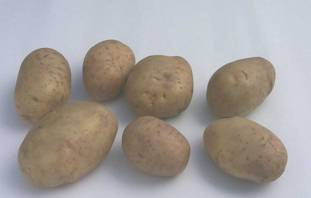It is a derivative of the cross 3069d(4) x 2814 Q (1) and released in 1968 by the Central Variety Release Committee for Himachal Pradesh and Kumaon Hills of Uttranchal and also plains where late blight is a limiting factor. Plants are tall, compact and erect. Terminal leaflet is a cottony or cordate and leaflet of top 2-3 leaves incurred at the base. Leaflets are broad and light green. Tubers are oval, white, eye fleet. Flesh is light white and waxy. Sprouts are blue purple and medium thick. It has good keeping quality if given proper post harvest treatment. It is field resistant to late blight with immunity to race. It is resistant to early blight and wart disease. It matures 100 days in plains and 120 days in hills. The yield potential is 200 and 150 q/ha in plains and hills, respectively.
KUFRI KHASHIGARO
It is popular variety of hilly region and a derivative of the cross Taborky x SD 698 D.lt is adapted to hilly regions of Assam. Tubers are medium, attractive white, round with deep eyes and waxy, pale yellow flesh and rapid bulking. It possesses short dormancy. It gave 160 q/ha tubers in 120 days crop duration.
KUFRI LALIMA
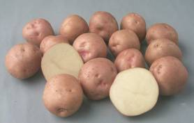It is a fast bulking variety and a derivative of the cross Kufri Red x CP 1362, which released in 1982 by Central Sub-Committee on Release of Varieties for the plains of Uttar Pradesh, Bihar, West Bengal, Orissa and Karnataka States. Plants are tall, vigorous, erect, compact and dark green. Stems are 4-5, stem red pigmented and prominent at internodes. Leaves are open, wide; rachis has red, pigmentation running on the central side. Leaflets are smooth, glossy and ovate. Foliage is dark-green. Tuber is uniformly red, medium to large, round, regular, smooth with fleet to medium deep eyes. Flesh is white colour with mealy texture. Sprouts are medium thick with red colour. Mowers are numerous, persistent and blue purple coloured. Pollens are fertile, natural berry forms freely. It is susceptible to late blight wart, powdery, scab, leaf blotch, phoma leaf spot, brown rot, charcoal rot and common scab. It is susceptible to Virus 'Y'. It possesses slow rate of degeneration and medium dormancy (about 2Yz months).
KUFRI LAUVKAR
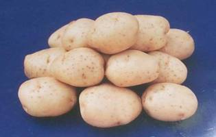It is a derivative of cross Serkoy x Adina released in 1973 by Central sub-committee on Release of Varieties for Decan Peninsula (Maharashtra). Plants are tall, erect and thick stems, large ovate lanceolate and incurring leaflets. Foliage is dark grey green and glossy, foliage many, large and mostly borne on rachis. Tuber is round, white, and flesh white, sprouts beet root red colour, cooking and peeling easy. Cooked flesh is white and good in taste. It has slow rate of degeneration. It is susceptible to late blight, leaf blotch; potato virus' Y' and leaf roll.111is variety escapes att.lck to tuber moth. It is susceptible to early blight. It is an early variety, which yielded 250 q/ha tubers in 75-95 days crop duration.
KUFRI MUTHU
It is a derivative of the cross 3046(1) x M-l09-C and released in 1971 by Central Sub Committee on release of Varieties for Nilgiri Hills for summer and autumn seasons. Plants are tall and vigorous: Leaves are dark green and short stolens. Tubers are large, white, roundish, oval, smooth eyes medium deep and flesh white. Sprouts are of blue purple colour. The yield potential of this variety is 135 q/hain100 days of crop duration. It is resistant to late blight but susceptible to early blight.
KUFRI NAVEEN
It is a derivative of the cross 0-692 x, 3070d (4) and adapted to northeast hills of Assam and high altitude of Himachal Pradesh. Tubers are medium, white and oval with fleet eyes. Flesh IS waxy and pale yellow. It IS susceptible to early blight and to resistant to wart. It possesses high degree of field resistant/immunity to race 0, 1 and 4 of late blight.
KUFRI PUKHRAJ
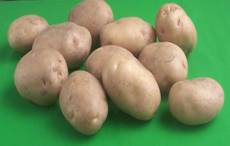It is a wider adaptable variety and a cross of Craig's Defiance x JEX/B-687, which released in 1998 from CPRI, Shimla. Plants are tall, semi-erect, medium compact and vigorous. Stems are few, medium thick, green with moderately developed straight wings. Foliage is dark grey green. Leaves are closed with large sized foliage, rachis green. Leaflets are ovate to lanceolate, smooth glossy surface with entire margin. Flowers are white and moderate in flowering, anthers orange yellow, well-developed, high pollen stability and round stigma. Tubers are white, large, oval, slightly tapered, smooth skin, fleet eyes, and yellow flesh having blue purple sprouts. It is an early maturing variety (70- 90 days). The yield potential is 400 q/ha. It is resistant to early blight and moderately resistant to late blight. This variety is suitable in Bihar, Gujarat, Haryana, Himachal Pradesh, Karnataka, Madhya Pradesh, Maharashtra, Orissa, Punjab, Uttar Pradesh and West Bengal. It is not suitable for processing.
KUFRI SHEETMAN
It is a derivative of the cross Craig Defiance x Phulwa, released in 1968 by Central Variety Release Committee for plains, especially frost affected areas of Punjab, Rajasthan, Haryana and Western Uttar Pradesh. Plants are tall open erect and vigorous, stem thick, firm and erect. Leaflets are rough dull green with waxy margins. Tubers are oval and white with fleet eyes. It is resistant to frost and drought. It is susceptible to late blight and leaf roll.
KUFRI SHERPA
It is a derivative of the cross Ultimus x Adina and recommended for cultivation in the hills to West Bengal State by 9th Workshop of All India Coordinated Potato Improvement Project. Plants are tall, vigorous, erect, and semi-compact with spreading pasture under wet conditions. Stems are few, highly branched, semi-solid and slightly hairy. Leaflets are rough, hairy, oval, prominent venation, yellow green, petioles short; light green and medium in size. Foliage are small in size and usually 4- 7 pairs. Foliage is light green. Tubers are medium in size, round flattened, skin smooth, medium thick, white, eyes medium deep and flesh of pale yellow colour. Sprouts are conical, blue purple and medium thick, white, eyes medium deep and flesh of pale yellow colour. Flowers are scanty, persistent, and pink in colour, regular in shape with pollen fertility of 50-60 per cent. Tuber dormancy, is medium (2-2 ½ ) months with good keeping quality. It matures 135 and 100 days in hill and plains, respectively and yield is 225-250q/ha. It is susceptible to frost, brown rot and leaf roll and resistant to late blight (both in foliage and tubers) and phoma leaf spot but moderately resistant to early blight and highly immune to wart.
KUFRI SINDHURI
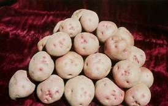It is derivative of the cross Kufri Kundan x Kufri Red and released by Central Variety Release Committee in 1966 for plains of Punjab, Jammu, Orissa, Bihar, Haryana, Uttar Pradesh, Madhya Pradesh and West Bengal. Plants are tall, erect, stems thick having pigment in most part of stem. Leaf rachis is pigmented and leaves open and stiff. Leaflets are dull, basal lobe unequal, petiole slightly pigmented but not midrib. Tubers are round, light red, with medium deep eyes. Flesh is dull white. Tubers are moderate in number, skin firm, not prone to brushing, bigger tubers having tendency to develop hollow heart. Keeping quality is good. It is late variety and matures in 120 days in plains and 165 days in hills. In plains, it yields 300 q/ha. It is slightly resistance to frost. It is Tuber Crops susceptible to late blight, common scab charcoal rot and wilts, moderately resistant to early blight and possesses field resistance to viral disease.
KUFRI SUTLEJ
It is a derivative of Kufri Bahar x Kufri Alankar and released in 1996 from CPRI, Shimla. Plants are medium compact and vigorous. Stem are few, thick, lightly pigmented at base with moderately developed wavy wings. Foliage is grey green. Leaves are ovate-lanceolate and rachis slightly pigmented. Leaflet is ovate, smooth dull sur1ace with entire margin. Flowers are white moderates in flowering. Anthers are orange yellow, well-developed and high pollen stability. Stigma is round and slightly notched. Tubers are white, large, oval, smooth skin, fleet eyes, and white flesh and sprouts light red. It is medium maturing (90-100 days) variety yielded 400 q/ha. This variety is moderately resistant to late blight. It is recommended for cultivation in Bihar, Haryana, Madhya Pradesh, Punjab and Uttar Pradesh. This variety has good consumer quality because of easy to cook, waxy texture, and mild flavour and free 1rom discolouration after cooking. It possesses medium dry matter. It is not suitable for processing.
KUFRI SWARNA
It is a cross of Kufri Jyoti x (VIn) 2 (62.33.3) and released in tile year of 1985 from CPRI, Shimla. Plants are tall, erect, compact and vigorous. Stem is few thick with prominent wings. Foliage is dark green, leaves open, rachis green leaflets ovate, moderately pubescent, entire margin and many follicles. Flowers are white, profuse flowering, anthers orange yellow, well-developed, low pollen stability and stigma round. Tubers are white, medium, round oval, smooth skin, fleet eyes, and white flesh having blue purple sprouts. This variety is widely adaptable for south India hills. It matures 130-135 days in summer, while 100-110 days in autumn. This variety is highly resistant to both the species of cyst (Globodera rostochinensis and G. pallida) and resistant to early and late blight. This variety is not suitable for processing.
Climatic Requirements
Potato is basically cool season crop. It grows well from sea level to snow line, where sufficient moisture and fertile soil are available. It is grown in winter in plains of India. However, in northern hills, it is grown as summer season crop. Potato is a long day plant but cultivated as~ day plant. It requires favourable environmental conditions such as low temperature and short day conditions at the time of tuberization for rapid bulking rate. About 20°C temperature is good for tuber formation and it reduces as the temperature increases. Tuberization is badly affected at about 300C temperature. At higher temperature, the respiration rate increases and the carbohydrates produced by photosynthesis are consumed rather than stored in tuber. High temperatures at any part of growing period affect the size of leaflets, thereby reducing the tuber formation. It grows best under long day conditions sunshine along with cooler nights are essential for reducing the spread of diseases.
Soil Conditions
Potato can be produced on a wide range of soils, ranging from sandy loam, silt loam, loam and clay soil. Soil for potato should be friable, well aerated, fairly deep and well supplied with organic matter. Well- drained sandy loam and medium loam soils are most suitable for potato cultivation. Soil structure and texture has a marked effect on the quality of the tuber. Light soil is preferred, because they tend to promote more uniform soil temperatures and make harvesting of the crop easier. Alkaline or saline soil is not suitable for potato cultivation. They are well suited to acidic soils (pH 5.0 to 6.5) as acidic conditions tend to limit scab diseases.
Planting Time
In Plains
Early Crop: Third week of September to first week of October.
Main crop: First week of October to third week of October.
Late Crop: Third week of October to first week of November
II. In Hills: Potato is planted in hills from the third week of February to second week of April. In the southern hills near Ootacamund in Nilgiris, planting is done three times in a year, i.e. in the month of February, April and September In the plateau regions of Maharashtra, Bihar Madhya Pradesh, potato is raised in rainy and winter seasons.. In the Mysore plateau, the summer and winter crop is planted in April-June and in October-December, respectively.
Seed Rate, Methods of Sowing and Spacing
The seed requirements for a hectare on the basis of seed size are given below:
Large size- 25-30 q/ha; Medium size- 15-20 q/ha; Small size- 10-15 q/ha; Out tubers- 8-12 q/h2:-' Potato is planted mainly by two methods:
1. Ridge and Furrow Method: In this method, the ridges are prepared. The length of the ridges depends on slope of the plot. Too long ridges and furrows arc not supplied with irrigation water conveniently. The potato tubers are planted on is let into furrows.
2. Flat Bed Method: In this method, the whole plot is divided into beds of convenient length and width. The shallow furrows are opened and potato tubers are planted at recommended distance. The tubers are covered with the original soil of furrows. When the germination is completed and plants become 10 to 12 cm height, earthing should be done. Suitable plant spacing in relation to potato seed grades are given below:
Diameter of tuber from longer axis |
Planting distance (row x seed) |
2.5-3.5 cm |
50 x 20 cm or 60 x 15 cm |
3.5-5.0 cm |
60 x 25 cm |
5.0-6.0 cm |
60 x 40 cm |
Nutritional Requirements and Their Management
Soils poor in organic matter content should be supplied with 250 - 500 q/ha of farmyard manure or compost during land preparation, preferably a fortnight before planting. Potato plant is a heavy feeder. When it is grown in medium type of soils, it needs 100 to 150 kg nitrogen, 80 to 100 kg phosphorous and 80 to 100 kg potassium per hectare. Two - third to three fourth quantity of nitrogen along with whole quantity of phosphorus and potassium is applied at the time of planting. Remaining one fourth to one third nitrogen is applied 30 to 35 days after planting i.e. at the time of first earthing up or when plants become 25 to 30 cm in height either in the form of top dressing or as a foliar feeding. Spraying of essential micronutrients such as boron, zinc, copper, iron, manganese, molybdenum etc. is done when crop is showing deficiency symptoms.
Intercultural Operations
In potato crop, both types of weeds are found i.e. broad-leaved weeds as well as narrow leaved weeds-The use of weedicides in potato crop in general is not essential because earthing up operation destroy almost all weeds, if some how, weed plants are growing on ridges, they may be pulled out by hands. Pre- emergence application of nitrogen @ 1.0 kg a.i./ha or alachlor @.2.0 kg a.i./ha or post emergence application of propanil @ 1.0 kg a.i./ha may be used ill solution fom1 (800-1000 litre/ha). Care should be taken while spraying of post- emergence herbicides that they should not come in the contact to potato plants. Proper development of tubers depends upon aeration, moisture availability and proper soil temperature. Therefore, proper earthing up is necessary. Earthing should be done when the plants are 15 to 22 cm ill height. Generally earthing is done at the time of top dressing of nitrogenous fertilizers. The ridges should be high enough to cover up tubers. If necessary, a second earthing may be done after two -week of the first one. A mould board plough or a ridger may be used for earthing up in large area.
Use of Plant Growth Regulators
Soaking of potato seed tuber in CCC at 500 mg/l (Schedule and Pandita, 1986), sodium ascorbate at 100 mg/l (Murthy et al.. 1975) cytozyme at 5 per cent (Pandita and Hooda, 1979), Singh and Kaur, 1981) or foliar sprays with ethephon at 400 mg/l (Murthy and Banerjee, 1978, Pandita and Hooda, 1979 a, Sekhon and Singh, 1985), CCC at 25 mg/l or garlic acid at 10-100 mg/l(Kumar and Agarwal, 1978) increased tuber yield. Sidda Reddy (1988) also obtained higher tuber yield with foliar sprays of mixtallol at 1 or 2 mg/l.
Water Management
Before coming to the planting operation. It should be kept in mind that the sufficient soil moisture is available for satisfactory sprouting. If not then light pre-irrigation or just after planting may be given. The rate of water use is low till 30-35 days after planting; it means that the first irrigation is essentially done within 30-35 days after planting. However, when soil moisture seems insufficient for sprouting, intervals of first irrigation should be reduced. Further, irrigation is done as and when crop needs. As regards method of irrigation in potato, the furrow method is commonly followed.
Harvesting, Yield and Storage
Harvested potatoes are heaped under shade for a couple of days, so that their skin becomes hard and soil adhering with them is also separated out. Under good crop management, 350-450 quintals of marketable potatoes of good quality can be produced from one hectare land. The sorting operation is the most important, in that all cut tubers, bruised, injured by insects-pest and disease are removed. Sorted healthy tubers are graded in to different grades based on diameter of the tubers reduce the prices in the market. Therefore, such tubers should be sorted and marked separately. Over sized tubers are great in demand for chips making. Very small sized tubers are also not remaining unsold. These tubers are purchased by poor people for making vegetable by partially Cushing them before cooking. However, both the over sized and under sized are quite unsuitable for seed purposes. Potatoes can be stored in the cold storage at the temperatures of 4 to 7oC and relative humidity.
Diseases and Pests
Diseases
Non-Viral Diseases
Early Blight (Alternaria solani)
The infection appears on lower .leaves with necrotic spots having concentric rings. The fungus survives in the soil. In diseased plant debris. The collateral host is tomato. High moisture and low temperature are favourable for disease.
Control Measures
- Follow crop rotation
- Collect and bum plant debris after harvesting
- Start sprays the crop Dithane M-45 at 0.2 per cent 30 to 35 days after planting and repeat I0 to 15 days interval
- Grow early blight tolerant varieties such as Kufri Naveen, Kufri Sjndhuri and Kufri Jeevan.
Late Blight (Phytophthora infestans)
The infection appears at the tips or edges of the lower leaves with circular or irregular water soaked spots. White downy fungus growth appears on the underside of the leaves around the spots. Cloudy weather is conducive for very fast spread of the disease. In case of sever incidence all above ground parts may show rotting. Later the disease may spread to tubers and initiate rotting.
Control Measures
- Plant only healthy disease free certified seed tubers.
- Spray the crop thoroughly with diathane M-45 (2.0 kg/ha) or diathane Z- 78 (2.5 kg/ha) or difolatan (2.5 kg/ha) well in advance to general appearance of disease. The spraying operations should remain continue at narrow interval of 5 to 6 days during cloudy weather. (iii) Dig out tubers when foliage is completely dry or cleaned. (iv) Grow late blight resistance varieties like Kufri Navaharl. (v) Avoid applying in excess nitrogen and irrigation.
Black Scurf (Rhizoctonia solani)
The infected plants killed, stem canker may also be formed. Affected plants may form aerial tubers. On tubers, black sclerotial bodies are formed. It is a soil as well as tuber borne disease.
Control Measures
- Always sow certified seeds
- Treat the seed tubers with any organo mercurial fungicides containing 6 per cent mercury {agallol, aretan, emisan etc.) for about 5 to 10 minutes before the planting and also seed tubers before keeping in the cold storage. (iii) Dip the tubers in 1.75 per cent solution of sulfuric acid for 20 minutes. (iv) Apply Brassicol at 30 kg per hectare in the soil at the time of sowing. (v) Apply sawdust at 25 q/ha with recommended doses of nitrogen at least 15 days before sowing.
Common Scab of Potato (Streptomyces scabies)
It survives in soil years together and on infected tubers in cold storage. It may also spread through manure. Affected tubers show the superficial roughened areas of corky tissue, often slightly below the plane of healthy skin of tubers. Low soil moisture is favourable for proliferation of causal pathogen.
Control Measures
- Obtain healthy, disease free seed tubers for planting.
- Disinfect the tubers by dipping in suspension of mercurial fungicide e.g. emisan-6 or agallol- 6 at 0.25 per cent concentration for 5 minutes, (iii) Plant the tubers shallow. (IV) Keep the soil wet during tuberization. (v) Follow crop rotation with non-host crops including beets, carrot etc. (VI) Maintain soil pH 5.0 to 5.3.
Black Leg or Soft Rot (Erwinia spp.)
It is caused by different species of bacteria. The base of shoots develops a blackened shriveled cortex and its growth is stunted. Leaflets become reddish in colour at the tips, branches become stiffened and more upright than normal. The affected haulms are jet black in colour at the soil level. The tubers become watery and upon rotting give off offensive sulphurous odour.
Control Measures:
- Obtain healthy seed tubers for planting.
- Avoid planting of cut seed potato.
- Avoid planting too early and too late in the season.
- Collect and destroy affected plants as and when seen in the field.
- Avoid injury to tubers during harvesting, transit and storage.
- Wash the tubers with chlorinated water before storage.
- Keep the stores well ventilated, dry and cool.
Bacterial Brown Rot or Wilt Disease (Pseudomonas solanacearum)
Affected plants show dwarfing and bronze discolouration of the leaflets. When affected stem or tubers cut across, the browning of the xylem vessel is seen, and upon squeezing, the whitish bacterial ooze may come out.
Control Measures
- Obtain healthy, disease free seed tubers for planting.
- Collect and destroy infected plants.
- Avoid flowing rain or irrigation water from diseased field to healthy one.
- Disinfect cutting knife with a suitable bactericide solution, whenever diseased tubers are cut.
- Follow crop rotation with non-host crops such as maize, soybean and red top grass for at least three years in the field,
- Reduce the application of organic manure (it promotes activity of bacteria) but apply high doses of inorganic fertilizers (decrease the activity).
- Treat the seed tubers in 0.02 per cent sueptocycine for 30 minutes after giving five mm deep cut.
Charcoal Rot (Macrophmina phaseoli)
The roots of the affected plants become brown in colour. The rotting starts on the stem portion. The skin of the stern becomes ash coloured.lne dark lesions appear at the lenticels of the tubers and also round the stern end of tuber. Charcoal rot is common during the hot and dry months in late season crops.
Control Measures
- Obtain disease free seed tubers for planting. Hill potatoes are nearly free from this pathogen.
- Grow early maturing varieties such as Kufri Alankar or Kufri Chandramukhi.
- Irrigate crop at regular intervals.
- Seed tubers may be treated with ageUal-6 or aretan at 0.25 per cent solution before
storage. The treated tubers should not be eaten.
Wart Disease of Potato (Synchytrium endobioticum)
It is a caused by the fungus. Affected plants show warty out growth protuberances on sterns, stolons and tubers. The roots are not affected. The wart consists of distorted,
proliferated-branched structures grown together into a mass of hyper parasitic tissue. It is difficult to control once it has been established in a field.
Control Measures
- Avoid growing potatoes in known wart-affected soil.
- Obtain disease free seed tubers for planting. (iii) Soil treatment with 5 per cent formalin is effective but very costly. (iv)Grow wart tolerance varieties like Kufri Sherpa, Kufri Jyoti, Kufri Jeevan and Kufri Muthu.
Viral Diseases
Leaf Roll
A virus known as potato leaf roll virus, potato virus 1, solanum virus 14 or Corium solani Holmes causes it. Transmission of virus in nature occurs through infected tubers and through insect, an aphid (Myzus persicae). Affected plants become dwarf, more upright thin normal, the leaves are rolled, especially the lower one. They are thick and leathery.
Mosaic Disease
Potato crop is affected by mainly three types of mosaic.
Type of mosaic |
Caused viruses |
Mild mosaic |
Potato Latent virus, Potato Virus X, Potato Mottle Virus, Solanum Virus-l |
Rugose mosaic |
Potato Virus X and Potato Virus Y |
Cinkle of potato |
Potato Virus X and Potato Virus A |
Control Measures of Potato Viral Diseases
- Plant only certified seed tubers
- Apply anyone of the systemic insecticides like thimet, temik or furadan in the furrow at 10 kg per hectare at the time of planting
- Uproot affected plants along with complete root system and mother tuber, and destroy them
- Spray the crop with metasystox at 0.1 per cent to control aphid population
- Remove haulms in the first week of January, when aphid population build up is very fast.
Phytoplasma Diseases
Potato Witches Broom
Infected plants develop many axillary and basal shoots giving 'witches broom' appearance and develop small, pigmented tubers. These tubers sprout even attached to infected plants (Nagaich et al., 1974). The disease is transmitted by grafting and leafhopper (Orosius albicintus). Tuber transmission is also very high. The pathogen can infect tomato, brinjal, Datura fastuo.va, D. metel, Nicandra physaloides, Vinca rosea and Calendula officinalis. This disease can be controlled by hot water treatment of 'witches broom' affected tubers at 50 °C for 10 minutes, causes degeneration of pathogen and plants developed from such tubers did not develop symptoms upto 6 to 7 weeks.
Purple Top of Potato
The typical symptoms are purple pigmentation and rolling of basal parts of leaflets of young top leaves. The affected plants are stunted have many axillary shoots with aerial tubers. Root system is poorly developed (Nagaich and Giri, 1973). It causes phloem fluorescence. The disease is transmitted by grafting and leafhoppers (Alebroides nigrocutellatus, Orosius alibicinctus (and Seriance equata), Tuber transmission is also common but the extent varies with age of plants, the host range of pathogen includes tomato, tobacco, brinjal, clove, Datura stramonium, Calelldula officinalis, Cyphomandra betaceu etc, Phyalis floridana, Vinca rosea, Oxytetracycline, benlate, cycloheximide etc. are highly effective and causes 70 to 96 per cent remission of symptoms.
Marginal Falvescence of Potato
Flavescence or chlorosis along the margins of leaflets of upper leaves and small, narrow leaflets are prominent symptoms, affected plants are stunted and produce clusters of small tubers, which have shorter dormancy and produce hairy sprouts. It causes phloem fluorescence (Nagaich and Giri, 1973). The disease is transmitted by grafting and hopper, Seriana equate the disease can infect other hosts like, tomato, tobacco, brinjal, calendula officinalis, physalis flloridana, vinca rosea, and cyphomandra betacea. Treatment of affected plants with antiamoebin + benlate or benlate + BP causes remission upto 80 per cent.
Potato Phyllody
The disease is characterized by extreme hairiness and roughing of leaves and stems. Chlorotic leaves develop small leaflets but enlarged petioles. Infected plants develop several naked androecia as small yellow "rosettes" and axillary aerial tubers Phyllod flowers are enlarged and have cupped clays and corolla (Khurana et al 1983). It has wide host range and includes Dianthus barbatus, Pisum sativum, Lycopersicon chilense, Phyalis floridana, Solunum nigrum and Daucus carota. The pathogen can be eliminated by subjecting infected tubers to hot water treatment at 50 °C for 10-15 minutes.
Pests
Cut Worms (Agrotis spp, Euxoa spp)
They cut the sprouts at ground level. They feed only at night. They also attack tubers and make holes, thereby reducing market prices.
Control Measures
- Spray the crop with dursban 20 EC at 2.5 ml per litre of water or drench the plants, where the damage is noticed.
- Apply phorate 10 G granules at 10 kg I per hectare on soil around the plants and rake the soil thereafter.
- Use only well rotten farmyard manure.
Epilachna Beetle
Both the adults and larvae of this beetle feed on skeletonization of leaves.
Control Measures
- Pick up the eggs, larvae and adults by hands.
- Spray the crop with carbaryl at 0.1 per cent.
- Dust the crop with sevin dust at 30 kg per hectare.
Leaf Eating Caterpillars (Spilosoma obliqua, Spodoptera exigua):
Both the caterpillars cause damage by feeding potato leaves.
Control Measures
(i) Spray the crop with thiodon 35 EC or endocel at 0.15 per cent
(ii) Making border around the field with carbaryl dust would be effective control.
Aphids (Myzus persicae)
Aphids sucks the sap from leaves. Affected plants become weak, leaves become yellow and curl downwards. Aphid secretes honeydew, which gives rise to sooty mould and other fungal diseases.
Control Measures
- Spray the crop with rogor or metasystox or nuvacron or monocil at 1 ml per liter of water, and repeat the spray 10 to 12 days interval
- Apply thimate 10 G granules at 10 kg per hectare in furrows at the time of planting.
- Cut the haulms in the first week of January to check the transmission of virus through seed potatoes.
Jassids
They are slender wedge shaped green hopping insects. They are diagonally. They suck sap from under surface of leaves causing yellowing, curling and later burning of leaves called 'hopper bums'
Control Measures
- Spray the crop with metasystox at 0.1 per cent.
- Apply thimet 10 g granules at 10 kg per hectare in furrows at the time of planting.
Potato Tuber Moth (Phthorimaea operculella)
It is major pest of potato in storage. It can also attack in the field. It bores and makes tunnel into the potato tubers.
Control Measures
- Sow healthy insect free potato tubers.
- Use only well rotten farmyard manure.
- Do earthing carefully, so that tuber is not exposed in the field to ovipositing female moths
- Spray the crop with carbaryl or nuvacron or monocil at 0.1 per cent.
- Disinfect the go down with Malathion at 0.05 per cent before storing potatoes.
- Sort out all affected tubers before storage.
Golden Nematode (Globodera rostochiensis, Heterodera rostochiensis)
It is also known as potato root ell worm or potato cyst nematode. The infected plants produced additional rootlets near the soil surface. Later, outer leaves become prematurely yellow and die.
Control Measures
- Keep the infested area in quarantine to prevent the spread
- Avoid growing tomato or brinjal in infested soil.
- Follow crop rotation excluding solanaceous crop.
- Treat the soil with DD at the rate of90 gallons per hectare.
- Avoid the soil seed tubers brought from infested area.
Root Knot Nematodes (Meloidogne incognita and M. javanica)
Affected plants are stunted, sickly and may show premature and sudden drying. Tiny galls are formed on tubers. The nematodes survive as egg masses in diseased root and tuber in soil.
Control Measures
Similar control measures as described in tomato.
| 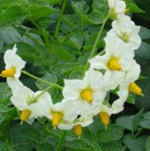 | 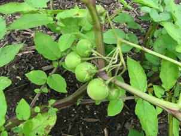 |
 |
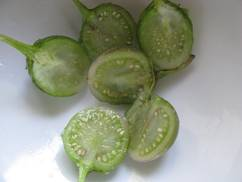 |
1. ___________ is an example of an edible stolon
a. Potato b. Carrot c. Cut tuber d. All the above
2. Which of the following is the order in which the potato tuber develop?
a. Initiation, tuberization and maturation
b. Tuberization, initiation and maturation
c. Initiation, maturation and tuberization
d. None
3. A vegetable that produces ‘haulm’ is
a. Groundnut b. Potato c. Sweet potato d. Tapioca
4. Which of the following is the latest variety released which is suitable for chipping
a. Kufri Chandramuki b. Kufri Chipsona 2
c. Kufri Chipsona 3 d. Kufri Dewa
5. Alkaloid present in potato
a. Tomatine b. Solanin c. Salosidine d. Sinigrin
| Download this lecture as PDF here |